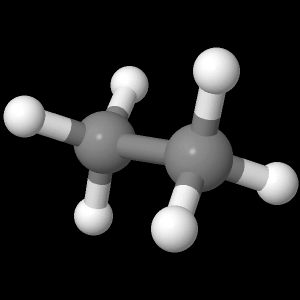

Once the molecule file is fully loaded the image at right will become live. At that time the "activate 3-D" icon
 will disappear.
will disappear.
How to
Display Orbitals
The display at right is from the file ethane-staggered-3-21G.log.
To follow along you can use the applet at right or download
the file and open it in a copy of the Jmol application.- Load the file into the Jmol application (already done if you are using the applet at right).
- Advance to the last "frame" because the quantum software puts the optimized orbital information in the last "frame". Use the pull-down menu in the Jmol application (Tools > Animate > Once) or the pop-up menu in both the application and the applet (right mouse button, control click on a one button mouse, > Model > select the last one, bottom choice).
- Start the molecule spinning. Use the pop-up menu in both the application and the applet. (right mouse button > Spin > On). This should give you an animated molecule that looks like what you get by clicking on the button below.
- Display your first orbital. In the application or the applet use the pop-up menu (right mouse button > Surfaces > Molecular Orbitals > 1..25 > #3 - 1.013). This will display the third orbital with an energy of -1.013 Hartrees. Your display should look like the one created by clicking on the button below.
- Display the two HOMOs (Highest Occupied Molecular Orbitals). These are the degenerate orbitals number 8 and 9. Use the pop-up menu (right mouse button > Surfaces > Molecular Orbitals > 1..25 > #8 - 0.4773) and (right mouse button > Surfaces > Molecular Orbitals > 1..25 > #8 - 0.4773). The two buttons below will display these two orbitals as you should have.
- Display the LUMO (Lowest Unoccupied Molecular Orbital). This is orbital number 10. Use the pop-up menu (right mouse button > Surfaces > Molecular Orbitals > 1..25 > #10 0.274). The button below will generate the display you should have.
Many more options for orbital display are available by using the commands "mo" and "isosurface" in the scripting window. A brief tutorial on using commands in the script window may be found here. Detailed documentation on scripting may be found here
You may look at any of these intermediate views again by clicking on the appropriate button.
Page skeleton and JavaScript generated by export to web function using Jmol 14.1.7 2014-01-22 20:25: on Jan 24, 2014.
This will be the viewer

If your browser/OS combination is Java capable you will get snappier performance if you
use Java.